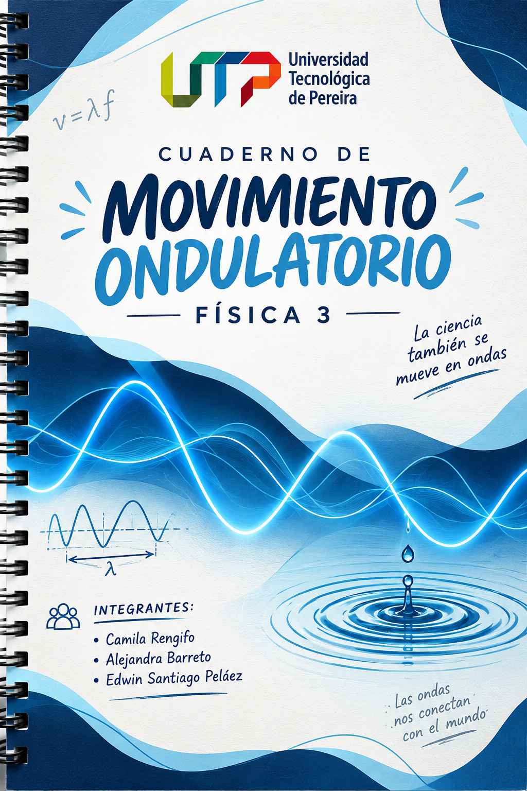

Cuaderno Virtual Universitario · 1.ª Edición Digital

Haz clic en el botón o directamente sobre la portada para abrir
Selecciona un experimento preconfigurado para estudiar las propiedades esenciales del efecto Doppler acústico:
A diferencia de la luz en el vacío, las ondas mecánicas de sonido requieren un medio elástico y deformable (en este simulador, aire homogéneo e inmóvil). La rapidez de propagación c = 340 m/s es una propiedad intrínseca del medio, no de la velocidad del emisor.
Cada frente de onda circular es emitido en un instante exacto \(t_{e,n} = n/f\). Una vez desprendido de la fuente, el centro del círculo permanece rígidamente fijado en las coordenadas del medio donde ocurrió la emisión. El frente no acompaña el movimiento posterior de la fuente.
El observador detecta una perturbación cuando la distancia euclidiana entre su posición en el instante de recepción \(t_r\) y el centro del frente coincide con el radio acústico expandido: \(|\mathbf{x}_o(t_r) - \mathbf{x}_c| = c(t_r - t_e)\).
Cuando la fuente supera la velocidad del sonido (\(M = v_f/c > 1\)), los frentes circulares quedan envueltos dentro de una superficie cónica con semiángulo \(\mu = \arcsin(1/M)\) produciendo la onda de choque acústica (estampido sónico).